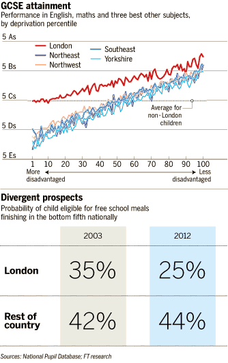
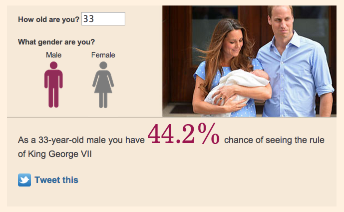
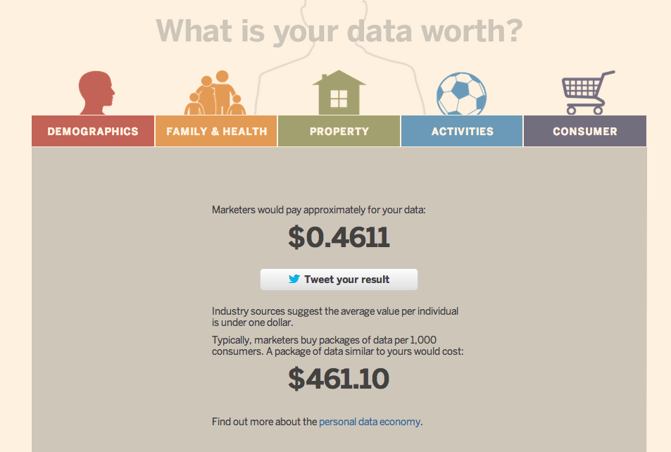
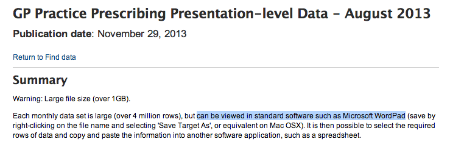
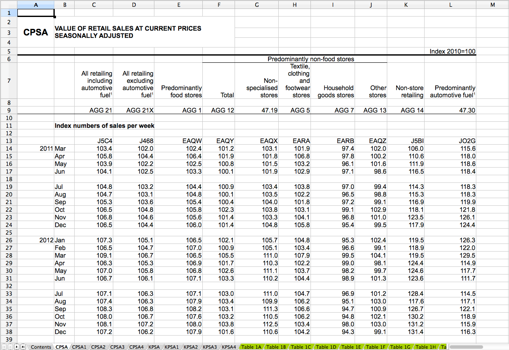
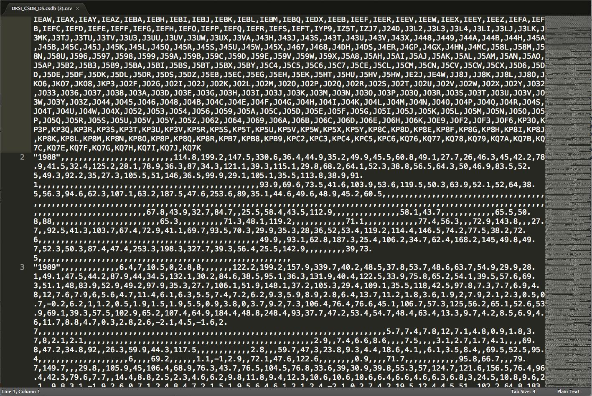
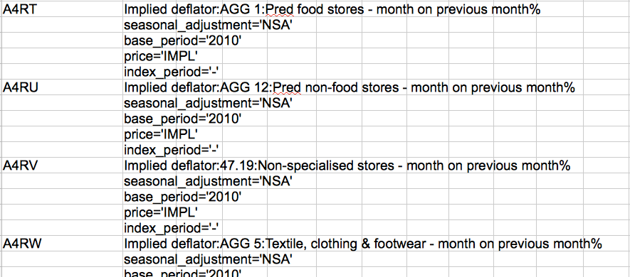

F
Slides: martinstabe.github.io/slides/ons

Source: Rich Gordon, Knight Lab, Northwestern University
What we do
- “data journalism”
- “interactive data visualisation”
- “interactive graphics”
“Data journalism”
Not a new idea
 Source: Atlanta Journal-Constitution, 1988, via Power Reporting
Source: Atlanta Journal-Constitution, 1988, via Power ReportingPretty pictures are not the objective
“I sort of see data journalism ... as social science done on deadline.
“We’re using the tools that social scientists have used for years ... [and] applying those tools to journalism problems and using it to help us tell stories with more authority.”
Source: “‘Social science done on deadline’: Research chat with ASU’s Steve Doig on data journalism,” Journalists’ Resource, Shorenstein Center, Harvard Kennedy School of Government
Reporting using statistical analysis
Data-driven journalism
So what is new?
Growing UK data availability
 Source: Legislation.gov
Source: Legislation.gov
The web!
“The Web is the canvas for CAR ... It has every advantage ... including unlimited depth, the ability to customize or personalize and the luxury of designing a database so that it will truly be useful to readers.”
Source: Derek Willis, “The canvas for CAR” (2007)
“News applications”
“a large web-based interactive database that tells a journalistic story using software instead of words and pictures.”
— Scott Klein, Propublica
News applications
Some characteristics of effective news apps:
- Explanatory and exploratory
- Highlights personal relevancy
- Social media integration
- Reusable product
- Responsive for mobile use
Near vs far: the Martini-glass narrative
Highlight the important views before handing over control.

Source: Edward Segel and Jeffrey Heer, “Narrative Visualization: Telling Stories with Data”
Personalisation

Personalisation

Context calculators
Social media integration

Social media integration
What we need
Public data that is:
- high-quality
- free to use
- fast to obtain
- analysable
- machine-readable
Independent analysis is non-obvious to some!
Source: NHS Prescription DataData journalists are weird...
We don't like this:
Source: ONSWe prefer this:
Source: ONS(Except this)
Source: ONSThis is even better:
Source: ONSThis is amazing!
 Source: ONS
Source: ONS
What’s next?
Every table, every ward: 134,567 census maps
Source: Alex Singleton, Census Open Atlas Project (ONS data)Mass-produced interactives
 Source: James Trimble, UK Data Explorer (ONS data)
Source: James Trimble, UK Data Explorer (ONS data)
Automated stories
 Source: Washington Post
Source: Washington Post
Robots!
 Source: LA Times (Image: @BennySP, Twitter)
Source: LA Times (Image: @BennySP, Twitter)
Slides: martinstabe.github.io/slides/ons